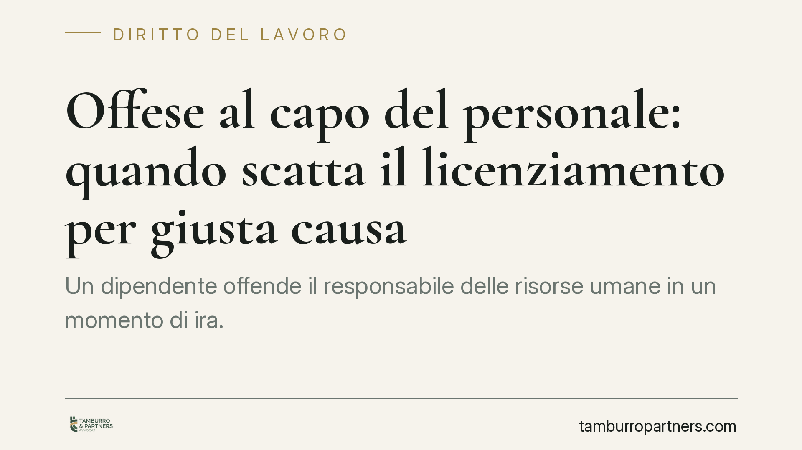

Offese al capo del personale: quando scatta il licenziamento per giusta causa
Un dipendente offende il responsabile delle risorse umane in un momento di ira. Basta a giustificare il licenziamento senza preavviso? La giurisprudenza recente distingue l'episodio isolato e impulsivo dalla condotta grave e minacciosa. La differenza incide sulla legittimità del recesso e sul regime delle tutele riconosciute al lavoratore.

Il caso: un'offesa dettata dall'ira
La questione ricorrente è semplice nei fatti ma complessa negli effetti: un lavoratore, in un momento di tensione, rivolge un'espressione offensiva al responsabile del personale. Il datore contesta la condotta e procede al licenziamento per giusta causa, ossia il recesso immediato e senza preavviso.
La giurisprudenza di legittimità ha affrontato più volte fattispecie di questo tipo. Il punto centrale non è se l'offesa vi sia stata, ma se raggiunga quella soglia di gravità che rende impossibile la prosecuzione, anche provvisoria, del rapporto.
> Nota: la pronuncia segnalata dalla stampa specializzata (indicata come Cass. ord. n. 3146/2026) va trattata con cautela, non essendo al momento verificabile nei repertori ufficiali. Le considerazioni che seguono valgono come inquadramento della giurisprudenza consolidata in materia, indipendentemente dal singolo provvedimento.
Inquadramento normativo
La giusta causa di licenziamento è disciplinata dall'art. 2119 del Codice civile: consente al datore di recedere senza preavviso quando si verifica una causa che non permette la prosecuzione, neppure provvisoria, del rapporto. È la sanzione più grave dell'ordinamento del lavoro e presuppone un fatto di particolare intensità lesiva del vincolo fiduciario.
La valutazione richiede un giudizio di proporzionalità: l'espulsione dal posto di lavoro deve essere adeguata alla gravità concreta della condotta. In questa verifica assumono rilievo alcuni indici ricorrenti:
- il carattere isolato dell'episodio, non inserito in una condotta reiterata;
- l'impulso d'ira o lo stato emotivo alterato, che attenua l'intenzionalità;
- l'assenza di minaccia o di componenti aggressive ulteriori rispetto alla mera offesa verbale.
Quando questi elementi ricorrono, l'offesa può risultare sanzionabile in via disciplinare ma non tale da integrare la giusta causa. Il licenziamento resta valido come atto risolutivo, ma privo del presupposto della giusta causa risulta illegittimo, con le conseguenze indennitarie che seguono.
Il regime delle tutele
Per i rapporti costituiti dal 7 marzo 2015 si applica il D.lgs. 23/2015 (cosiddetto contratto a tutele crescenti). Occorre distinguere due ipotesi previste dall'art. 3:
- il comma 1 disciplina la tutela indennitaria ordinaria: opera quando il licenziamento è illegittimo per difetto di giusta causa o di giustificato motivo, ma il fatto contestato sussiste. Il rapporto si risolve e al lavoratore spetta un'indennità economica;
- il comma 2 prevede la reintegrazione nel posto di lavoro nella sola ipotesi in cui sia dimostrata l'insussistenza del fatto materiale contestato.
Nel caso dell'offesa che effettivamente vi è stata ma non raggiunge la gravità richiesta, si ricade tipicamente nella tutela indennitaria del comma 1: il rapporto cessa, ma con obbligo di corresponsione dell'indennità.
Sul calcolo di tale indennità incide in modo decisivo la sentenza della Corte costituzionale n. 194/2018, che ha dichiarato illegittimo il criterio rigidamente ancorato all'anzianità di servizio. L'importo non è quindi determinabile in via automatica: il giudice lo quantifica valutando anzianità, dimensioni dell'impresa, comportamento e condizioni delle parti. Eventuali cifre riportate dalla stampa (ad esempio dodici mensilità) vanno lette come esito del singolo giudizio, non come regola generale.
Implicazioni pratiche
Per il datore di lavoro, la lezione è che la reazione espulsiva non è sempre proporzionata: un licenziamento adottato d'impulso, senza una valutazione della gravità concreta, rischia di trasformarsi in un onere indennitario.
Per il lavoratore, un singolo episodio verbale non equivale automaticamente alla perdita definitiva e non risarcita del posto: il contesto e le modalità dell'offesa pesano sulla qualificazione giuridica.
Cosa fare in concreto
- Rispettare il procedimento disciplinare dell'art. 7 dello Statuto dei lavoratori: contestazione scritta, specifica e tempestiva, con termine a difesa prima di ogni sanzione.
- Documentare i fatti con precisione: circostanze, testimoni, contesto e presenza o assenza di minacce, elementi decisivi nel giudizio di proporzionalità.
- Graduare la sanzione: verificare se il fatto giustifichi il recesso immediato o rientri tra le sanzioni conservative previste dal contratto collettivo.
- Esaminare la data di assunzione, per individuare il regime applicabile (L. 604/1966 o D.lgs. 23/2015).
- È opportuna una valutazione tecnica preventiva della proporzionalità, dato che l'errore di qualificazione produce effetti economici rilevanti e difficilmente reversibili.
---
*Contributo informativo a cura di Tamburro & Partners - Avv. Giuseppe Tamburro. Non costituisce parere legale.*
Ogni storia di lavoro ha i suoi tempi.
Se gestisci HR e vuoi un confronto su contenzioso, ispezioni o licenziamenti, scrivi allo studio. Ti rispondiamo entro un giorno lavorativo.